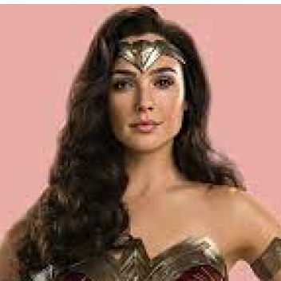
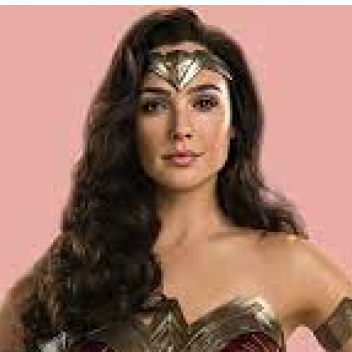
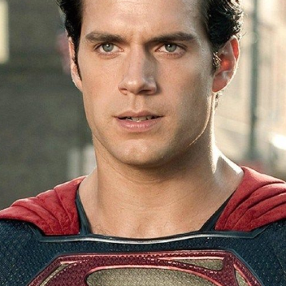
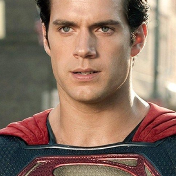

Batman
Batman (conocido inicialmente como
Bat-Man) es un personaje creado por los
estadounidenses Bob Kane y Bill Finger, y
propiedad de DC Comics. Apareció por
primera vez en la historia titulada «El caso
del sindicato químico» de la revista Detective
Comics N.º 27, lanzada por la editorial
National Publications el 30/3/1939.
 

Mujer Maravilla
Es una superheroína creada por William
Moulton Marston para la editorial DC
Comics. Es una princesa guerrera de las
Amazonas, pueblo ficticio basado en el de
las amazonas de la mitología griega. En su
tierra natal es conocida como la princesa
Diana de Temiscira pero fuera de esta utiliza
la identidad secreta de Diana Prince.
 


Superman
Es un superhéroe que apareció por primera
vez en los cómics estadounidenses
publicados por DC Comics.
El personaje fue creado por el escritor
estadounidense Jerry Siegel y el artista
canadiense Joe Shuster en 1933 cuando
ambos se encontraban viviendo en
Cleveland, Ohio.